Back to Projects
UHF RFID Reader Gate for Warehouse Management System
Completed
Abstract
This project involves the design and development of an Ultra-High Frequency (UHF) RFID reader
intended for warehouse management systems. The RFID reader aims to streamline inventory tracking
by providing reliable, real-time updates and reducing manual errors. The project includes the creation
of detailed circuit schematics, a 6-layer PCB layout, and the selection of key components such as the
ST25RU3993 IC and STM32 microcontroller.
A critical aspect of the design is the Planar Inverted-F Antenna (PIFA), which has been meticulously
designed and optimized using advanced simulation tools to ensure optimal performance in reading RFID
tags over a range of at least 2 meters. Through the application of these simulation tools and rapid
prototyping, the design achieves high gain and efficiency while maintaining compactness.
This project was developed as part of our EN2160 - Electronic Design Realization module at the Department of Electronic
and Telecommunications, University of Moratuwa. The collaborative effort between two team members focused on designing
and implementing this UHF RFID reader gate for warehouse management systems.
Project Highlights
6-Layer PCB Design
Complex high-speed PCB with impedance control, via stitching, and RF shielding techniques
Custom Antenna Design
IFA antenna designed in Ansys HFSS with 1.552E gain at 915 MHz center frequency
2+ Meter Read Range
Optimized RF circuit achieving reliable tag detection over extended distances
One-Week Challenge
Successfully designed and delivered the complex PCB within a tight one-week deadline
My Responsibilities
As part of this two-member team, I took on critical responsibilities that required both technical expertise
and time management under pressure:
- PCB Design with RF Circuit: Designed and delivered the complete 6-layer PCB within one week.
This was particularly challenging as it involved implementing high-speed PCB concepts including impedance matching,
via stitching, and RF shielding. Since the bare PCB itself was expensive to produce, I had to carefully design
this to ensure it would work in one go.
- Antenna Design: Responsible for the complete antenna design process, from initial calculations
to final optimization. I used Ansys HFSS to simulate and optimize the antenna design - this was my first time working
with this platform. It took me more than 40 iterations to finally reach the working IFA antenna. It was a wonderful
journey of learning and problem-solving.
- Component Selection: Conducted extensive research on datasheets to select optimal components
including the ST25RU3993 IC and STM32 microcontroller that would meet our performance requirements.
"This project was a significant step in my journey toward becoming an RF and
Microwave Engineer. It provided hands-on experience with RF electronics, deepening my passion and understanding
of the field."
Project Components
The project was divided into three main modules, each handled by dedicated team members:
1. PCB with RF Circuit
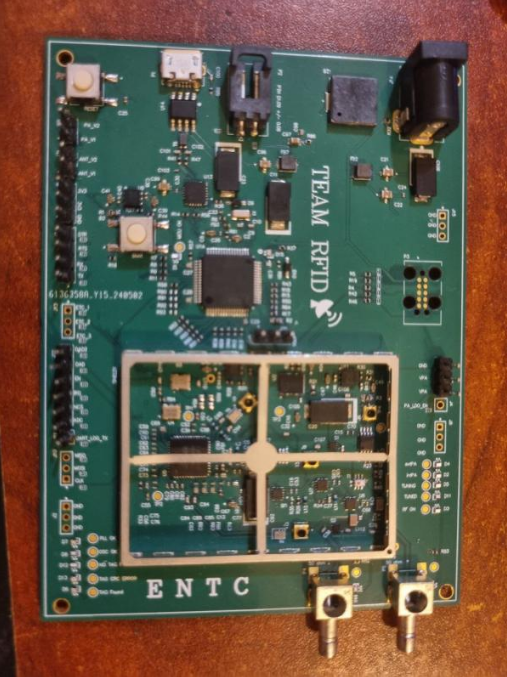
The PCB design included an RF circuit, which was crucial for the functionality of the UHF RFID system.
I took on the responsibility of designing this PCB and delivering it on time. This was a hard task as I
had to design this within a week. This was a 6-layer PCB, and many high-speed PCB concepts were used.
Since the bare PCB itself is expensive to produce, I had to carefully design this so we could make it work in one go.
2. Antenna Design
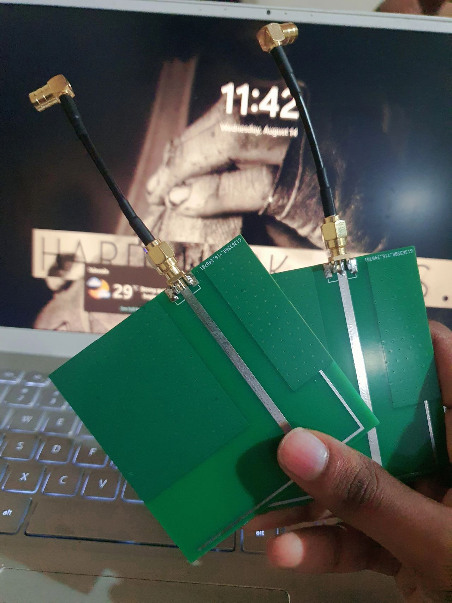
I was responsible for designing the antenna, ensuring optimal performance and compatibility with the RFID system.
I did all the calculations for the dimensions of the antenna. I used Ansys HFSS to simulate the antenna,
and this was the first time that I worked with this platform. It took me more than 40 iterations to finally
reach the working IFA antenna shown above. It was a wonderful journey of learning and discovery.
3. Enclosure
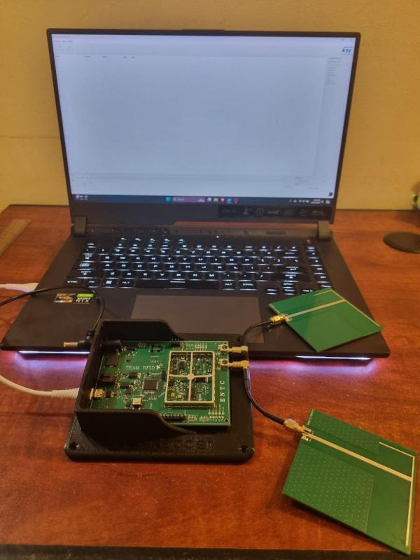
The enclosure, designed by my teammate Javin, provided a protective and functional housing for the system,
ensuring durability and professional appearance of the final product.
Key Components
ST25RU3993 IC - UHF RFID Reader Chip
ST25RU3993 IC Image
(Add image: st25ru3993.png - IC chip or pinout diagram)
The ST25RU3993 IC by STMicroelectronics is a high-performance UHF RFID reader IC designed for
demanding warehouse management systems. Key features include:
- High Sensitivity and Fast Read Rate: Ensures reliable detection and reading of RFID
tags over a range of at least 2 meters, crucial for efficient and real-time inventory tracking
- Wide Frequency Range: Operates from 840 to 960 MHz with multi-protocol support,
ensuring compatibility with various RFID tags and systems used globally
- Integrated Antenna Tuning: Simplifies the design process and enhances overall
performance by including features for antenna tuning and matching
- Low Power Consumption: Suitable for battery-powered applications, ensuring long-term
operational efficiency
- Robust Communication Protocols: Ensures data integrity and security during transmission,
critical for maintaining accurate inventory records
STM32 Microcontroller
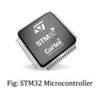
The STM32 microcontroller plays a pivotal role in orchestrating the overall system operation.
Renowned for its robust performance and flexibility, the STM32 provides the computational power necessary for:
- Processing RFID tag data
- Managing communication protocols
- Interfacing with the warehouse management system
- Providing extensive I/O capabilities with efficient power consumption
PCB Design Deep Dive
Layer Stack-Up Strategy
One of the initial challenges was selecting an appropriate layer stack up for the PCB. The recommended
custom layer stack up was too costly. To balance performance with cost-effectiveness, I opted for the
closest available stack up from JLCPCB.
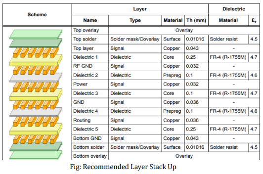
Recommended Layer Stack-Up
Advanced PCB Concepts Applied
Throughout this project, I gained practical experience in several advanced PCB design concepts:
Impedance Matching
Ensured trace impedance matched components (50Ω single-ended, 100Ω differential) to minimize signal reflection
Via Stitching & Shielding
Enhanced signal integrity and reduced EMI through strategic via placement
Teardrops
Added teardrops at trace-to-pad junctions for improved mechanical strength and electrical performance
Controlled Impedance
Mastered impedance control across different layers using Altium Designer
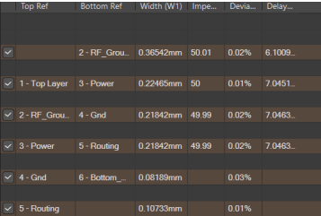
50Ω Impedance Profile
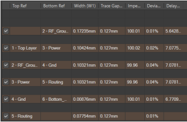
100Ω Differential Profile
Layer-by-Layer Breakdown
Top Layer
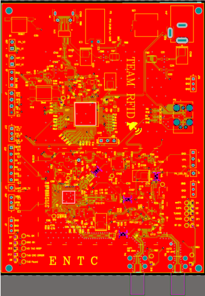
- All components and almost all interconnections located here
- Impedance-controlled RF traces (single-ended 50Ω CBCPW and differential 100Ω)
- Direct connection of all component ground terminals to surrounding GND plane without thermal relief
RF Ground Layer
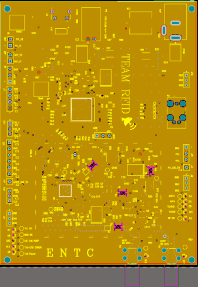
- Positioned directly below top layer to support 50Ω and 100Ω waveguide traces
- Solid and uninterrupted for direct path for RF return currents
- Critical for ensuring efficient signal transmission
Power Layer
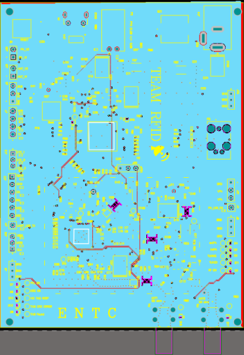
- Distributes supply voltages through power planes
- Minimal traces to avoid interference with RF signals
Routing Layer
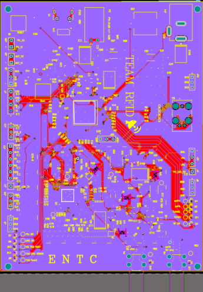
- Dedicated to interconnecting components
- Minimizes cross-talk effects on RF traces
PCB Specifications
Material: FR4
Thickness: 1.6mm
Layers: 6
Surface Finish: ENIG
Copper: 1oz outer / 0.5oz inner
Fabricated by: JLCPCB
Fabricated PCB
(Add image: fabricated_pcb.png - Final assembled PCB)
Antenna Design Journey
Design Evolution
Initially, we considered purchasing a ready-made antenna, but due to high cost and my curiosity about antenna
design, we decided to design our own. This decision led to an incredible learning journey involving multiple
design iterations and simulation cycles.
Antenna Types Explored
We experimented with several antenna designs, focusing on methods such as the inset feed method and
quarter-wave transformers. Here's the progression:
1. Simple Patch Antenna
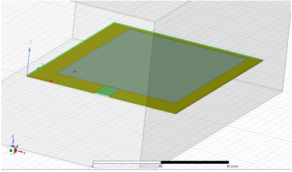
Simple Patch Antenna Design
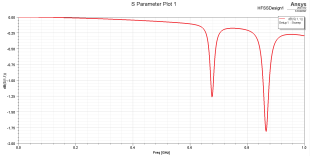
S-Parameter & Gain Plots
- Center Frequencies: 675 MHz and 890 MHz
- S11: -1.26 and -1.83
- Gain: 3.221E
- Outcome: While gain was acceptable, center frequency didn't achieve desired dip at 915 MHz,
and S-parameter values were much lower than required -10dB
2. Microstrip Patch with Inset Feed
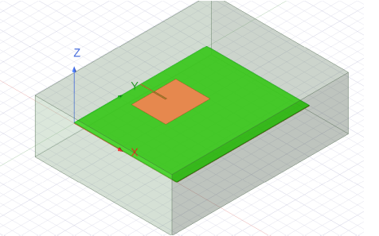
Inset Feed Patch Antenna
- Center Frequency: 915 MHz ✓
- S11: -4.8
- Gain: -1.055E (Loss instead of gain)
- Outcome: Center frequency was correct, but S-parameter below -10dB threshold and negative gain
3. PIFA - Planar Inverted-F Antenna
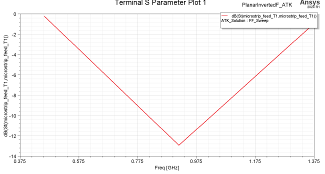
PIFA Simulation Results
- Center Frequency: 915 MHz ✓
- S11: -13.8 ✓
- Gain: 4.025E ✓
- Outcome: All parameters met requirements, but we wanted a smaller size
4. IFA - Inverted-F Antenna (Final Design)
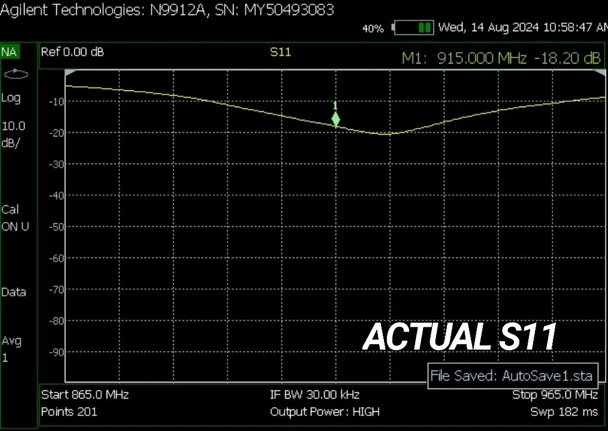
IFA Performance Results
- Center Frequency: 915 MHz ✓
- S11: -28.8 ✓✓ (Excellent impedance matching)
- Gain: 1.552E ✓
- Size: 8cm × 8cm (Compact design)
- Outcome: ⭐ Final design - All requirements met with smaller footprint!
Design Innovation: The IFA antenna features two ground patches on the top layer connected to
the bottom ground plane using vias, creating an efficient compact antenna solution.
Antenna Specifications
Material: FR4
Center Frequency: 915 MHz
Thickness: 1.6mm
Antenna Material: Copper
Size: 8cm × 8cm
Type: Inverted-F (IFA)
Connector: SMA
Key Design Considerations
- Frequency Range: 840-960 MHz for UHF RFID band compatibility
- Impedance Matching: 50Ω to minimize signal reflection and power loss
- Antenna Gain: High-gain design to extend read range beyond 2 meters
- Radiation Pattern: Directional pattern to focus signal strength and reduce interference
- Compact Design: 8cm × 8cm footprint suitable for portal gate installation
Tools & Technologies
Altium Designer (PCB Design)
Ansys HFSS (Antenna Simulation)
SolidWorks (Enclosure Design)
ST25RU3993 IC
STM32 MCU
JLCPCB (PCB Fabrication)
UHF RFID (840-960 MHz)
System Features
- Seamless Inventory Tracking: Fast and reliable RFID tag identification and tracking,
minimizing manual intervention and reducing errors
- Real-time Data Integration: Wi-Fi connectivity enables seamless data transmission to
centralized warehouse management systems
- Extended Read Range: Optimized RF circuit and antenna design achieving 2+ meter read range
- Tunable RF Circuitry: Supports frequency tuning from 840 to 960 MHz with two SMB antenna
connectors for controlled scanning
- External Power Amplifier Support: Requires 6V power adapter when external PA TX option is used
- Extensive Test Points: Multiple test points for easy measurement and modifications,
allowing external MCU control or on-board PA bypass
Key Learnings
- RF Circuit Design: Gained deep understanding of UHF RFID systems, impedance matching,
and signal integrity concepts
- High-Speed PCB Design: Mastered 6-layer PCB design with controlled impedance, via stitching,
shielding, and teardrops
- Antenna Design & Simulation: First-time experience with Ansys HFSS, learning through 40+
iterations to optimize antenna performance
- Design Tools Proficiency: Hands-on experience with professional tools (Altium, HFSS, SolidWorks)
- Time Management: Successfully delivered complex PCB design within tight one-week deadline
- Cost-Effective Design: Learned to balance performance requirements with budget constraints,
designing to work on first fabrication attempt
- Problem-Solving: Overcame challenges including component delays and complex impedance control
through iterative design and testing
- Teamwork: Effective collaboration in cross-functional team structure with clear module ownership
Future Developments
Future enhancements for handheld RFID reader circuits could explore deeper RF theory research, including:
- RF Propagation Optimization: Advanced study of multipath propagation, reflections, and
environmental obstacle mitigation in warehouse environments
- Dynamic Modulation Schemes: Adaptive modulation techniques that adjust to changing
environmental conditions and interference levels
- Advanced Signal Processing: Implementation of digital filtering and error correction
algorithms for improved tag detection accuracy
- Interference Mitigation: Frequency hopping, spread spectrum modulation, and interference
cancellation algorithms for crowded RF spectrum environments
- Extended Range Capabilities: Research into antenna arrays and beamforming techniques
for increased read distances
Documentation & Resources
Note: For more detailed technical information, please refer to the complete
"Final Project Report - Design Documentation" PDF file.
Acknowledgements
I would like to sincerely thank everyone who contributed to the success of this project:
- Our lecturer for constant encouragement, support, and strategic guidance throughout the project
- My teammate Javin for designing the enclosure and collaborative effort in completing the project
- The main project team for continuous support, rigorous testing, and attention to detail
- Technical advisors who provided invaluable expertise in overcoming design challenges
- The Department of Electronic and Telecommunications, University of Moratuwa for providing
resources and facilities